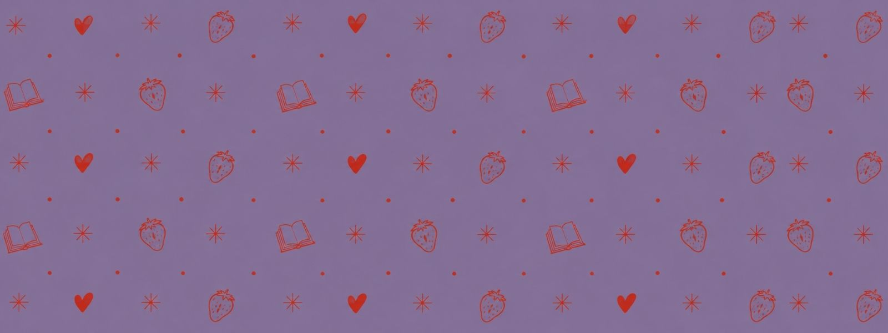
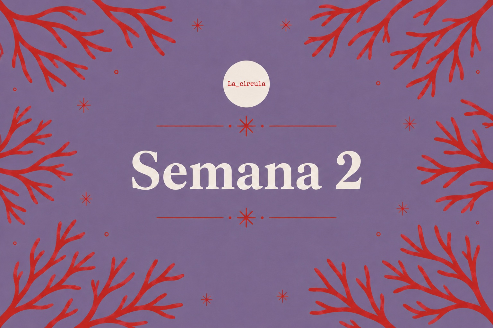

FRUTO
Audiolibro de La Círcula · una historia que florece semana a semana.
SEMANA 2 · 15
Sobre este audiolibro:
Fruto, de Daniela R. Gómez, es una obra protegida por derechos de autor.
Estos audios fueron realizados para acompañar las actividades de lectura de La Círcula
y se comparten exclusivamente con sus integrantes, sin fines de lucro y para uso personal.
Se solicita no descargar, reproducir ni compartir las grabaciones fuera de este espacio.
Todos los derechos de la obra corresponden a su autora y/o a sus respectivos titulares.
Escuchar

Capítulo · Semana 2
Semana 2
Ponte cómoda, dale play y deja que la historia encuentre su propio ritmo.
✦ Selecciona otro capítulo disponible en el recorrido para escucharlo.
Archivo:
El recorrido
Cada semana se abre un nuevo fragmento de Fruto. Los capítulos anteriores permanecen disponibles para volver a escucharlos.